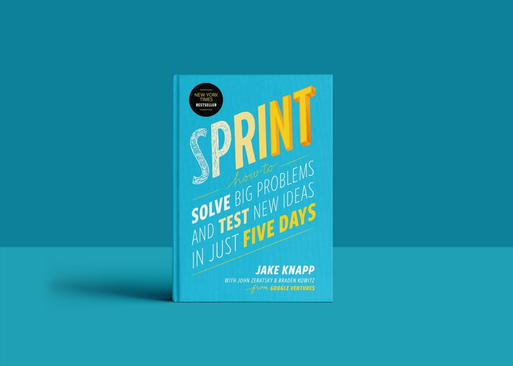
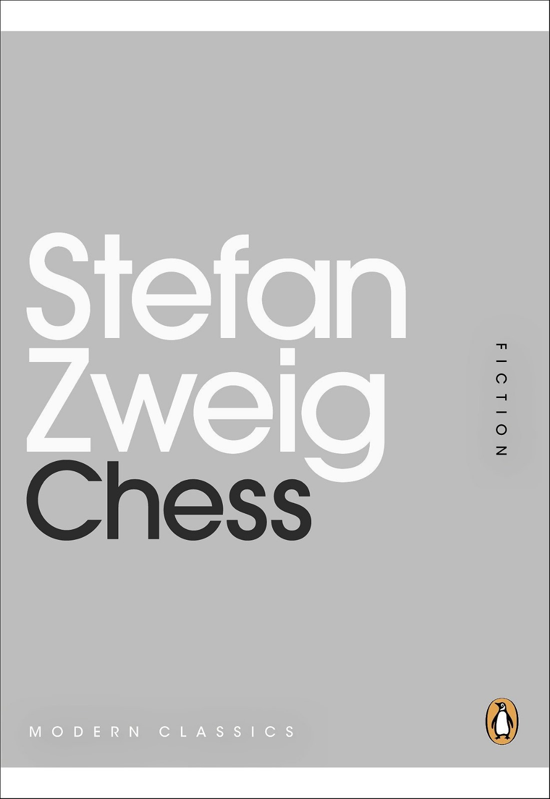

Daniel Ben Eli & Ariel Bosis
Welcome to our website all about the books "Sprint" and "Chess". Here, we talk about the stories that take place over the course of five days each.
Our website is all about exploring the themes of these books, and we've got a special twist: we've organized everything around the days of the week. Just like how each story takes place in five days (Monday - Friday).
"Sprint", by Jake Knapp offers a shortcut to solving tough problems in just five days. Instead of dragging out projects for months, this book provides an effective framework for brainstorming, creating prototypes, and testing ideas with real users. With practical tools and examples from companies like Savioke, it gives a clear way for innovation. If you're determined to face big challenges quickly, "Sprint" is a valuable resource for entrepreneurs, product managers, and anyone wanting a structured approach to problem solving.
"Chess" by Stefan Zweig tells the story of a game between the world chess champion and a mysterious man. The challenger surprises everyone by outplaying the champion and winning, even sacrificing his Queen for victory.
Monday: Often seen as the beginning of the workweek, Mondays can be a bit challenging for some people as they transition from the weekend back to work mode. It's a day when many people catch up on emails, plan their tasks for the week, and attend meetings to set priorities.
Tuesday: As the week progresses, Tuesday is often considered a more productive day than Monday. By now, people have settled into their routines and may feel more energized and focused.
Wednesday: Wednesday marks the midpoint of the workweek. Many people view Wednesday as a turning point, signaling that they are halfway through their tasks and closer to the weekend.
Thursday: Often seen as a day for wrapping up projects and finalizing tasks before the end of the week. It's a good time for team brainstorming sessions and pushing through any remaining work to ensure deadlines are met.
Friday: Friday is often a day when people feel a sense of relief and excitement for the weekend ahead. Friday afternoons may be less focused on intensive work and more geared towards wrapping up loose ends.